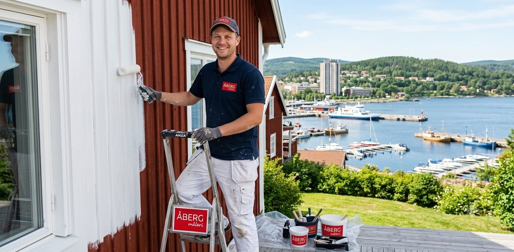
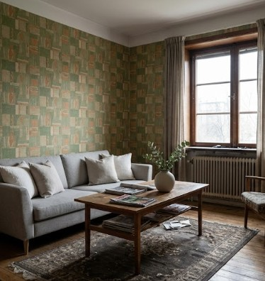
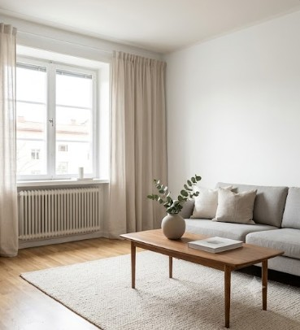

Måleri på riktigt — sedan 1987
Vi förvandlar rum till konstverk.
Åberg Måleri har satt färg på Örnsköldsvik sedan 1987. Vi målar hem, trapphus och lokaler med en noggrannhet som märks långt efter att stegen är hopfälld.

Utvalt projekt
Fasadmålning, Örnsköldsvik
39+
År av hantverk
Vårt hantverk
Från ett enda rum
till hela fastigheter.
Fem discipliner, samma princip: inget jobb är för litet eller för stort, och resultatet ska hålla i decennier.
Inomhusmålning
Väggar, tak och snickerier med knivskarpa linjer och ett städat, dammfritt utförande. Det sista handslaget i varje renovering.
Utomhusmålning
Fasader och fönster som står emot det norrländska klimatet.
Tapetsering
Millimeterpassade våder — från klassiska mönster till moderna väggpapper.
Totalentreprenad
Ett samtal, ett ansvar. Tillsammans med våra samarbetspartners inom bygg och el driver vi hela projektet — från första skiss till sista penseldraget.
Golv & industri
Slitstarka beläggningar för lokaler, garage och industrimiljöer.
0 kr
Offerten kostar ingenting — ett tydligt pris innan första burken öppnas.
Före / Efter
Skillnaden sitter
i detaljerna.
Dra i reglaget och se förvandlingen.

Före
EfterFärg är det sista handslaget i ett projekt — det som avgör hur allt annat uppfattas.
Åberg Måleri — sedan 1987
Kontakt
Redo att måla om?
Vi tar det från början.
Berätta om ditt projekt så återkommer vi med en kostnadsfri offert — utan förpliktelser, med ett pris som håller.
Skicka en förfrågan